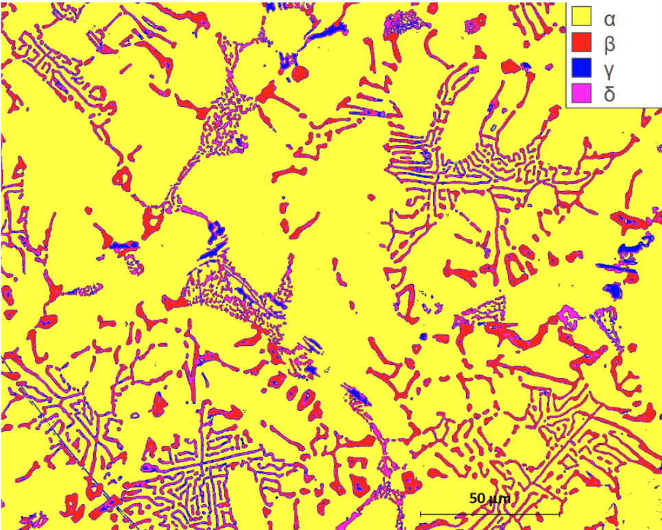
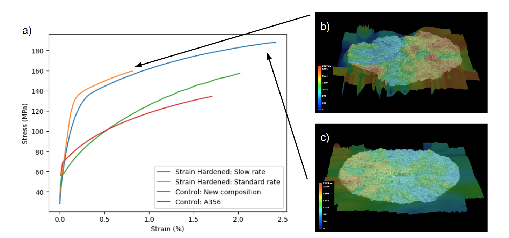

Microgripper FEA
Oct 2025 - Dec 2025
Affiliation: Materials Science Department, University of Michigan
Keywords: FEA, tensile, microscopy
Alloy Design
For our end-of-semester aluminum-focused class project, our 4-person team decided to design an aluminum alloy that could be used in surgical microgrippers. Through strain hardening, we hoped to develop a higher resistance and higher strength metal that could compete with alternatives like stainless steel.
We used an Instron machine to strain harden our samples, introducing defects to the grains that would theoretically interrupt the flow of both electrons and dislocation motion.
Experimental Characterization
We used optical microscopy to identify the microstructure in the strain-hardened aluminum alloy. We observed a branching microstructure that presents many grain boundaries to interrupt dislocations.

We then proceeded to run tensile tests on both strain-hardened aluminum and untreated aluminum, comparing their mechanical behavior over multiple trials. We also examined fracture surfaces using a Keyence 3D scanner. As expected, we saw a higher ultimate tensile strength from our strain hardened sample (orange) than our untreated sample (green). The pileup of dislocations in the strain-hardened aluminum prevents slip motion, allowing it to undergo more stress before fracture but giving it less flexibility to plastically deform.

FEA Simulation
Hoping to translate these material behaviors to our intended application, I proceeded to make a simple 3D model of a microgripper. Each of its prongs were 10mm long, so as to simulate small-scale behavior under load. I brought the design into Ansys Mechanical and imported our experimental tensile data for each processing technique to improve the accuracy of the models.

Simulation under 20N of reaction force found that the strain-hardened gripper deformed by 0.118mm, while the untreated gripper had a greater deformation of 0.140mm. These are both within an acceptable range of deformation for a 10mm prong, but it does confirm the theory that strain-hardening the material improved its strength.
While aluminum may not yet be a good alternative to stainless steel for microgrippers, this experimental and computational work did provide useful background on material processing techniques that can be used to further improve mechanical properties for robotics. My chief contributions to this group project were in tensile testing and FEA analysis.